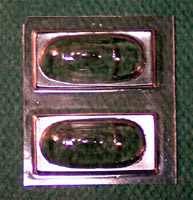

{kind=link}
{kind=link}
{kind=link}
{kind=link}


Northrop N � 1M �Jeep�
Kit #48003 MSRP $27.98
Images and text Copyright � 2004 by Matt Swan
Developmental Background
The Flying Wing has such an aeronautically clean design that it gives it a big advantage over conventional aircraft designs. This advantage is that drag has been reduced to a minimum. And as a result of this minimum drag, the performance of the Flying Wing is unequalled in speed, range and operating economy. In Germany the flying-wing-design concept advantages were also seen by Alexander Lippisch and the Horton Brothers and in England by Hill. All were designers, who built and flew successful Flying Wing aircraft. The chief proponent of Flying Wing design in the United States was John K. (Jack) Northrop.
Jack Northrop was an aviation pioneer who long dreamed of building operational "flying wings," aircraft without fuselages or tails. In 1939, he founded his own company, Northrop Aircraft Co., and in July 1940 the first of his experimental flying wings took the skies over Rogers (now Murdoc) Dry Lake in Southern California. This design was known as the N-1M �Jeep�. The test pilot for the first flight was Vance Breese. Breese reported that the aircraft could fly no higher than 5 feet off the ground and that flight could only be sustained by maintaining a precise angle of attack. Von Karman was called in and he solved the problem by making adjustments to the trailing edges of the elevons. The flight test program was now turned over to Moye W. Stephens, Northrop Test Pilot and Secretary to the Northrop Corporation. Early tests showed the plane to be satisfactory in stability and control. With numerous test flights over 2-1/2 years, the elegant diamond-shaped "Jeep" proved itself to be overweight and underpowered. To decrease drag, the aircraft�s two 65-hp Lycoming 0-145 four-cylinder engines were buried within the fuselage. Two 120-hp six-cylinder 6AC264F2 air-cooled Franklin engines later replaced these in an effort to improve the power situation.
Control of the aircraft was achieved through the use of a system of elevons and wing tip rudders. The elevons served in tailless type aircraft both as elevators and ailerons. Split flap devices on the drooping wingtips took the place of conventional rudder. These wingtips originally drooped downward but were later straightened. By November 1941, after having made some 28 flights, Stephens reported that when attempting to move the N-1M about its vertical axis, the aircraft had a tendency to oscillate in what is called a Dutch roll. That is, the aircraft�s wings alternately rose and fell tracing a circular path in a plane that lies between the horizontal and the vertical. Although Stephens was fearful that the oscillations might not be controllable, he found that adjustments to the aircraft�s configuration cleared up the problem.
The N-1M �Jeep� was truly the first American flying wing aircraft. From its inception, it was plagued by poor performance because it was both overweight and chronically underpowered. Despite these problems, Northrop convinced General H. H. �Hap� Arnold that the N-1 M was successful enough to serve as the forerunner of more advanced flying wing concepts, and the aircraft did form the basis for Northrop�s subsequent development of the N-M9 and of the larger and longer-ranged XB-35 and YB-49 flying wings. These large Flying Wing bombers lost out to the B-36 in the competition for a long range strategic bomber for the USAF but the concept was resurrected for the B-2 Stealth Bomber. Today, the N-1M has been restored to its original drooped wingtip configuration and it resides in the Steven F. Udvar-Hazy Center on the Mall in Washington, D.C.
The Kit
This is a limited run kit from Sword in the Czech Republic and displays all the idiosyncrasies of this kind of product. The box contains only a few polystyrene injection-molded medium gray pieces on two odd triangular sprues, two main wings halves also in polystyrene, a small bag of dark gray resin pieces and two vacuformed canopies. The box itself features a nice painting of the aircraft in flight on the front cover and four sepia tinted photos on the backside of the cockpit interior, which should be helpful during construction. These would be more helpful if they were in full color. The main wing halves display very large sprue gates that leave a severe mark on the leading edges of the wings. This will need a little putty to smooth it out during the construction phase. These wing halves also have a slight warp and need to be stressed slightly to fit properly. Surface detail looks good with nice, crisp engraved panel lines and rivet detail. There are some large injector pin markings inside the wing halves but these will present no problem during construction. The overall aircraft size gives about the same wingspan as a F4U Corsair as you can see below right.

You can click on the above images to view larger pictures
I seem to be getting a little color shift here, the plastic is not pink as the second picture shows but is actually medium gray as in the forth picture. The two small trees of accessory injection pieces show some light flash and more heavy sprue gates as well as a distinct mold separation line. All of these should clean up nicely. We are provided with two identical vacuformed canopies on a single sheet of clear styrene, not that we would screw up a canopy, eh? The plastic is quite clear and will most likely look great after a quick dip in Future floor polish. The vacuform canopy is sealed in one side of a small plastic bag and the resin parts are sealed in the other side. Here we have twelve resin cast parts to detail the interior of the cockpit, the engine air intakes and the main landing gear. The detail on all of these pieces is very nice; they display no warpage or flash and have standard sized pour stubs. During a close examination I could find no evidence of micro bubbles in the resin.
In summation of the kit parts we have twenty injection molded polystyrene parts, twelve pieces in good quality resin and two vacuform pieces for a grand total of thirty-four pieces, of which one is a duplicate.
Decals and Instructions
The instructions for this model are compact and brief but do seem to cover most points of construction well. They consist of a single page that includes a very good historical background on the aircraft, a parts diagram and a paint color chart. Five exploded view construction steps that include plenty of color call-outs follow this. There is a fairly detailed little piece on painting the propeller blades, which are mostly wood with a steel cap and a large yellow tip marker. There is one piece that was missed in the instructions and that is the resin forward section of the nose gear bay. If you are building this model pay close attention to this area and test fit the parts thoroughly.
That is not a thumbnail of the decals to the right but an actual size scan of the sheet. There are not a whole lot of decals for this model but ones we do get are nicely done. We get propeller markings, a Northrop company logo, a couple of �no step� warnings and some US stars. The decals show good print registry and good color density. They look to be nicely thin and if they are like the last few sets of decals I have handled from Sword, they should work out just fine.
Conclusions
This is a cute little model, that�s the only way I can really describe it. The subject certainly is important in the annals of history and, to the best of my knowledge, is not represented in this scale or any other scale by any other manufacture. The kit will need a little work, it is a limited run kit after all but should produce an interesting and unique subject for your modeling shelf.